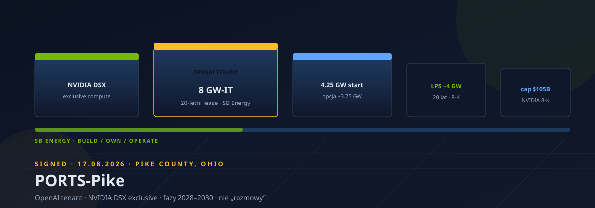
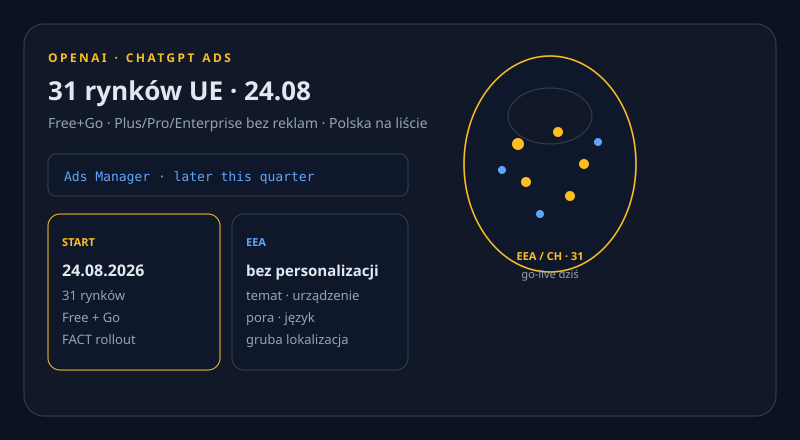
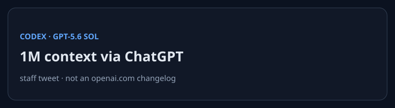

Nowe vs 23.08: Ads 31 rynków UE (go-live dziś), Alibaba 710 mln akcji HK$112,70, FT Fable 5 mix (Ramp REPORTED), Codex CLI 0.149.1, Abbott 1800 DC, Semafor humanoid vs Bolt, Claude status rano. X: 402. Reddit: 403. Dziura ≠ cisza.

WAŻNE FACT Największy primary follow-on w historii HK: 710 mln nowych akcji po HK$112,70. Wpływy w 100% na full-stack AI — po kwartale z zyskiem −75% i capex +75% do 67,7 mld RMB. Close środa.
Na otwarciu HK kurs ~−8–10% (CNBC: −8,4% w relacji, do ~HK$112,7). Oversubscription / popyt SWF = REPORTED (Reuters via Business Times), nie primary Reuters.


NOWE EVENT Go-live 24.08 w 31 rynkach (Free+Go). Plus/Pro/Enterprise bez reklam. EEA/CH: tylko kontekst (temat, gruba lokalizacja, urządzenie, pora, język) — nie personalizacja. Polska na liście.
Self-serve Ads Manager later this quarter; start przez team + agencje (Publicis, Omnicom, WPP, Havas, Dentsu). Brak potwierdzonego screenshotu PL o 07:35.
NOWE Tag rust-v0.149.1 24.08 00:28 UTC. Patch na 0.149.0 (20.08): exec callers klasyfikują nowe wątki; remote compaction budżetuje retained images; detached memory = consolidation. Pakiet @openai/codex@0.149.1.
Nie model, nie pricing, nie powierzchnia ChatGPT.
NOWE FACT Incydent vgz5psbjmt1h: 05:06 UTC Investigating elevated errors (Mythos 5, Fable 5, Opus 5, Opus 4.8); 05:27 Identified, fix in progress. Powierzchnie: claude.ai, API, Code, Cowork.
To status page, nie „Anthropic pada”. Claude Code latest nadal 2.1.241 (23.08) — cisza po wczoraj; brak 2.1.242.
CISZA Anthropic / xAI / Google / Meta / Mistral / DeepSeek / HF / NVIDIA — brak nowego oficjalnego postu 22–24.08 po briefie 23.08. Jedyny lab drop w oknie: Codex 0.149.1.
Anthropic xAI DeepMind Google AI Meta AI Mistral DeepSeek HF blog NVIDIA
REPORTED FT 23.08 (PAYWALL): Fable 5 ≈11% spendu klientów na narzędzia Anthropic >2 mies. Ramp lipiec (Willison): Opus 4.8 28%, Sonnet 4.6 8,3%, Fable 5 8,0%. Capability ≠ default spend.
ARR $65 mld to STARE (17.08) — tylko tło, nie news. OpenAI ARR „>$40 mld” REPORTED. HN 368/314.
FACT Gov. Abbott (ABC This Week): data center’y „same sobie wykopały grób”. BI: ~1800 projektów wstrzymanych; nowe standardy PUC/ERCOT, audyt, sugestia zakazu na wsi. 7/10 Amerykanów przeciw DC w okolicy (Gallup via BI).
Verge: analogiczny zwrot Shapiro (Pensylwania). Polityczny koszt boomu AI, nie Nvidia pricing.
NOWE Holenderski DPA: €825 mln (~$966 mln) za zautomatyzowane blokady kierowców. Art. 22 adjacent. Uber przeczy i apeluje. TC 23.08.
FACT Semafor 23.08: Robot Olympics Pekin — ~0,2 s szybciej niż rekord Bolta; po mecie w ścianę (słabe hamowanie). Relacja z igrzysk, nie niezależny test.
TREND Daily spike +2715 (115k łącznie). mattpocock/skills +2447. Alishahryar1/free-claude-code +1081 — ostrożnie, ToS.
NOWE Apache Incubating: local-first agent workspace, append-only log tool-calli. Nowy byt w trending, nie wrapper.
NOWE PH 23.08 #1: cloud desktop dla agenta (pliki, przeglądarka, terminal, mail, kalendarz). PH 24.08: 0▲ — skip.
NOWE FetchSandbox MCP 225▲: OpenAPI → stateful sandbox → receipt, że fix API działa. OzBrain Show HN 89/53 — shared agent memory. Claude Academy 158▲ / 2 kom. = blast, skip.
TREND CROWDFUNDING MemoMind One: HUD + tłumaczenia, brak kamery. Liczby CONFLICT: Man of Many 23.08 mówi $8,5 mln / 2274 backerów vs BackerLens ~$1,0–1,2 mln — nie rozstrzygamy. Crowdfunding ≠ shipping.
TOZO AIVU: tinted waveguide, claim PR $100k — krawędź okna. Brak twardego nowego launchu gadżetu w oknie. HoverAir / patent Meta / BSTY / URXR — nie NOWE.
X HOLE get_users_me 200 @ProductRootIO; pierwsze search_news OpenAI = 402 credits depleted. Halt. 0 itemów X. Dziura ≠ cisza.
REDDIT HOLE r/LocalLLaMA, r/ClaudeAI, r/OpenAI: 403. Nie wymyślamy wątków.
HN front: FT Fable 5 368/314 · What Is a Harness 380/144 · AGENTS.md 244/100 · Vibe Tax 132/105 · Skyrim companion 52/9. Cluster „Claude down” ~05:00 UTC zbieżny ze status page. Brak Launch HN 23–24.08.